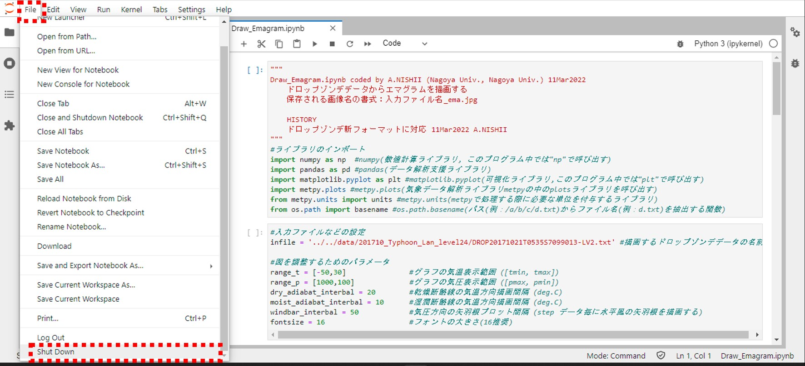

Jupyter Labの使い方(超簡易版)
Jupyter LabでとりあえずIPython Notebook(.ipynb)を動かすための最低限の解説です。
詳しい使い方は検索したり公式ドキュメントを確認したりしてください。Jupyter Labの前世代であるJupyter Notebookの情報も概ね参考にできます。
Jupyter Labの起動
表示したいファイルがあるディレクトリに移動した後，以下のコマンドを実行すると起動する
jupyter lab #色々なメッセージが表示されたのち，ウェブブラウザ上でJupyter Labが起動する #Jupyter Labを終了するまではこのターミナルは操作できなくなる
左赤枠内にターミナル上の現在のディレクトリの中身が表示されていれば起動成功
ファイルを開く
ファイル名をクリックするとJupyter Lab上の新しいタブで.ipynbファイルが開く
青線の入っているところが現在参照しているセル
セルの実行
Shift + Enterで青線の入った部分のセル(ソースコードを任意に分割したうちの一部)を実行する
Shift + Enterで青線の引いてあるセルを実行する
[ ](赤枠内)に数字が付いたら実行成功，エラーの場合セルの下にメッセ―ジが表示される
実行したセルに図を描画するコード(plt.figureなど)が含まれている場合
図の描画結果もセルの下に表示される
オブジェクトの中身を確認する
セルの一番最後が変数名になっていると，以下のようにオブジェクト(変数)の中身も表示される
Sondeオブジェクト(pd.DataFrame)の中身が表形式で出力される

変数に入っている値も見ることができる，未定義だとエラーになる
Jupyter Labを終了する
Fileタブ->Shut Down(一番下)によりJupyter Labを終了できる。終了後はタブを閉じる

Fileタブの一番下の"Shut Down"を選択
この画面が表示されればシャットダウン成功，このブラウザは閉じてよい
*この画面なしでそのままブラウザが終了することもある
ターミナルを再び操作できるようになる